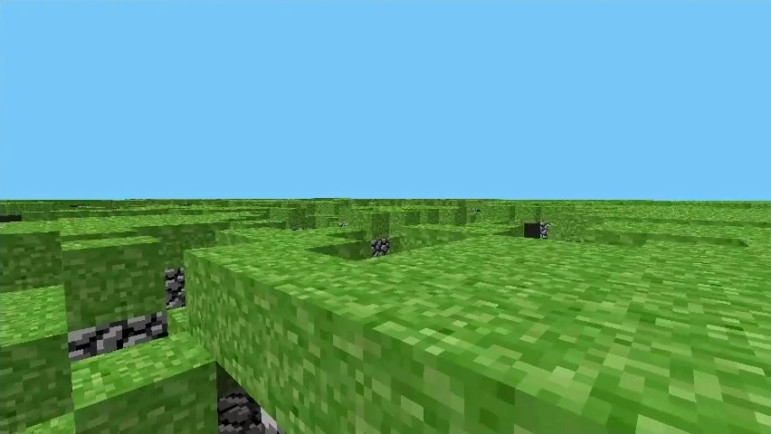

Cave Game
10 мая 2009
Всё ещё мало кому известный программист Маркус Персон публекует свою очередную разработку - Cave Game.
В той версии игры карта была размером 256x256 блоков и состояла из булыжника и травы, в глубинах мира можно найти пещеры. Уже есть простая механика света и чанки.
13 мая выходит первое обновление - rd-132211
- Игра стала более стабильной
- Добавлены установка и разрушение блоков
- Генератор мира стал более гладким и менее случайным
Спустя час выходит ещё одно обновление - rd-132328
Главным нововведением стал человек - первый моб в игре. Он спавнился после генерации мира и рандомно бегал по карте с очень странной анимацией движения. Так же при нажатии R игрок перемещался в случайную точку.